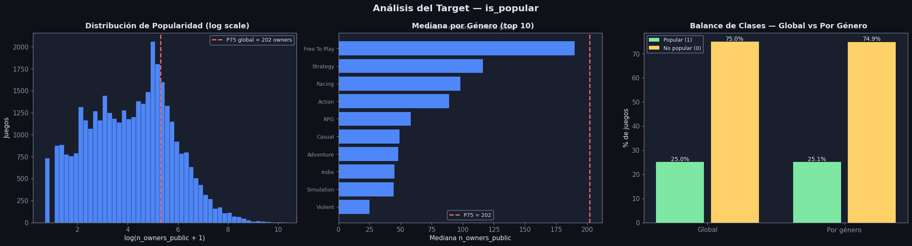
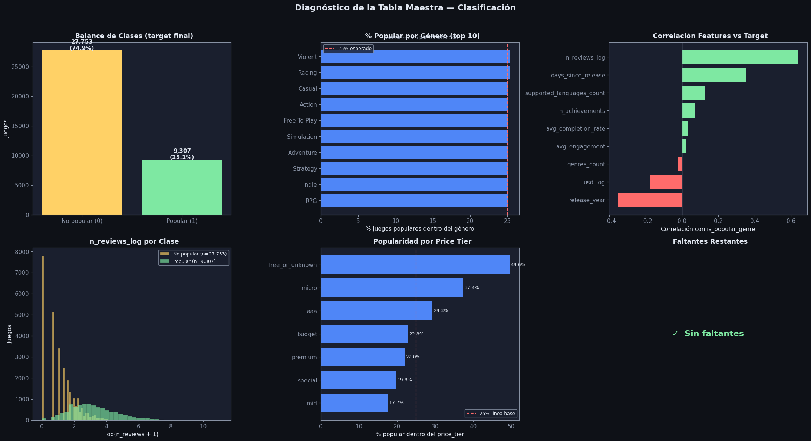

Feature Engineering — Clasificación de Popularidad#
Decisión de modelo#
Se elige clasificación sobre regresión por las siguientes razones:
Criterio |
Regresión |
Clasificación |
|---|---|---|
Observaciones |
168k pares, pero solo 4,596 jugadores únicos |
98k juegos con metadata completa |
Sesgo de muestra |
Solo jugadores con perfil público + historial de logros |
Todos los juegos publicados en Steam |
Features disponibles |
Incompletas: muchos jugadores sin precio/reviews |
Más completas por juego |
Target |
|
|
Pregunta de negocio: Dado un juego con sus características conocidas al momento de publicación (o poco después), ¿llegará al top 25% de juegos más comprados dentro de su categoría comparable?
import numpy as np
import pandas as pd
import matplotlib.pyplot as plt
import seaborn as sns
import warnings
warnings.filterwarnings('ignore')
DATA = 'Datos/'
DARK_BG = '#0e1117'
CARD_BG = '#1a1f2e'
ACCENT1 = '#4f86f7'
ACCENT2 = '#7ee8a2'
ACCENT3 = '#ff6b6b'
ACCENT4 = '#ffd166'
TEXT = '#e0e6f0'
MUTED = '#8892a4'
plt.rcParams.update({
'figure.facecolor': DARK_BG, 'axes.facecolor': CARD_BG,
'axes.edgecolor': MUTED, 'axes.labelcolor': TEXT,
'xtick.color': MUTED, 'ytick.color': MUTED,
'text.color': TEXT, 'grid.color': '#2d3348',
'grid.alpha': 0.6, 'font.family': 'DejaVu Sans',
'font.size': 11,
})
def title_ax(ax, txt, sub=None):
ax.set_title(txt, fontsize=13, fontweight='bold', color=TEXT, pad=8)
if sub:
ax.text(0.5, 1.02, sub, transform=ax.transAxes,
ha='center', fontsize=9, color=MUTED)
games = pd.read_csv(DATA + 'games_clean.csv', parse_dates=['release_date'])
ach_per_game = pd.read_csv(DATA + 'achievements_per_game.csv')
prices_game = pd.read_csv(DATA + 'prices_per_game.csv')
purchased_game = pd.read_csv(DATA + 'purchased_per_game.csv')
reviews_game = pd.read_csv(DATA + 'reviews_per_game.csv')
history_pair = pd.read_csv(DATA + 'history_per_pair.csv')
print('CSVs cargados:')
for name, df in [
('games_clean', games),
('ach_per_game', ach_per_game),
('prices_per_game', prices_game),
('purchased_per_game', purchased_game),
('reviews_per_game', reviews_game),
('history_per_pair', history_pair),
]:
print(f' {name:<22}: {df.shape[0]:>8,} filas x {df.shape[1]} cols')
CSVs cargados:
games_clean : 98,248 filas x 10 cols
ach_per_game : 50,537 filas x 6 cols
prices_per_game : 97,713 filas x 11 cols
purchased_per_game : 40,988 filas x 5 cols
reviews_per_game : 51,910 filas x 9 cols
history_per_pair : 253,610 filas x 3 cols
games_with_owners = purchased_game[purchased_game['n_owners_public'] > 0]['gameid']
valid_games = games[
(~games['is_playtest']) &
(games['gameid'].isin(games_with_owners)) &
(games['primary_genre'] != 'Unknown')
]['gameid']
print(f'Juegos totales en games_clean : {len(games):>8,}')
print(f' Excluidos — playtests : {games["is_playtest"].sum():>8,}')
print(f' Excluidos — sin dueños públicos : {len(games) - len(games_with_owners):>8,} (aprox)')
print(f' Excluidos — género Unknown : {(games["primary_genre"]=="Unknown").sum():>8,}')
print(f'Universo válido final : {len(valid_games):>8,} ({len(valid_games)/len(games)*100:.1f}% del total)')
Juegos totales en games_clean : 98,248
Excluidos — playtests : 5,294
Excluidos — sin dueños públicos : 57,327 (aprox)
Excluidos — género Unknown : 5,549
Universo válido final : 37,060 (37.7% del total)
1. Feature: avg_completion_rate por juego#
Se calcula cruzando history_per_pair con achievements_per_game, filtrando juegos spam y outliers para que el ratio sea representativo de engagement real.
ach_clean = ach_per_game[
(~ach_per_game['is_spam_game']) &
(ach_per_game['outlier_cat'] == 'normal')
][['gameid', 'n_achievements']]
history_cr = history_pair.merge(ach_clean, on='gameid', how='inner')
history_cr['completion_rate'] = (
history_cr['n_logros_par'] / history_cr['n_achievements']
).clip(0, 1).round(4)
avg_cr = (
history_cr
.groupby('gameid')['completion_rate']
.agg(avg_completion_rate='mean', n_players_with_history='count')
.reset_index()
)
print(f'Pares con completion_rate válido : {len(history_cr):,} (de {len(history_pair):,} totales)')
print(f'Juegos con avg_completion_rate : {len(avg_cr):,}')
print(f'completion_rate mediana : {history_cr["completion_rate"].median():.3f}')
Pares con completion_rate válido : 168,552 (de 253,610 totales)
Juegos con avg_completion_rate : 11,138
completion_rate mediana : 0.222
2. Feature: is_f2p#
Un juego es F2P si no tiene precio registrado pero sí tiene compradores públicos (alguien lo ‘adquirió’ aunque sea gratis).
F2P_MIN_OWNERS = 10
f2p = prices_game[['gameid', 'has_price']].merge(
purchased_game[['gameid', 'n_owners_public']], on='gameid', how='outer'
)
f2p['has_price'] = f2p['has_price'].fillna(False)
f2p['n_owners_public'] = f2p['n_owners_public'].fillna(0)
f2p['is_f2p'] = (~f2p['has_price']) & (f2p['n_owners_public'] >= F2P_MIN_OWNERS)
print(f'is_f2p=True : {f2p["is_f2p"].sum():,} juegos')
is_f2p=True : 6,712 juegos
3. Ensamble de game_features#
Se construye una tabla maestra con una fila por juego.
IMPORTANTE: n_owners_public, n_owners_all y penetration_pct se incluyen solo para construir el target y se eliminan antes de exportar la tabla de features.
SNAPSHOT_DATE = pd.Timestamp('2024-12-01')
game_features = (
games
.merge(ach_per_game[['gameid', 'n_achievements', 'is_spam_game', 'spam_ratio',
'outlier_cat', 'pct_generic']],
on='gameid', how='left')
.merge(prices_game[['gameid', 'usd_latest', 'usd_log', 'price_tier',
'has_price', 'no_eur_region']],
on='gameid', how='left')
.merge(purchased_game[['gameid', 'n_owners_public', 'n_owners_all', 'penetration_pct']],
on='gameid', how='left')
.merge(reviews_game[['gameid', 'n_reviews', 'n_reviews_log', 'avg_helpful',
'avg_engagement', 'pct_with_text', 'avg_review_len']],
on='gameid', how='left')
.merge(avg_cr, on='gameid', how='left')
.merge(f2p[['gameid', 'is_f2p']], on='gameid', how='left')
)
game_features['days_since_release'] = (
SNAPSHOT_DATE - game_features['release_date']
).dt.days.clip(lower=0)
print(f'game_features shape: {game_features.shape}')
print(f'Faltantes por columna (top 15):')
miss = game_features.isnull().sum()
print(miss[miss > 0].sort_values(ascending=False).head(15))
game_features shape: (98248, 33)
Faltantes por columna (top 15):
avg_completion_rate 87153
n_players_with_history 87153
n_owners_all 61077
penetration_pct 61077
n_owners_public 61077
is_spam_game 47788
n_achievements 47788
spam_ratio 47788
pct_generic 47788
outlier_cat 47788
avg_engagement 46499
pct_with_text 46499
n_reviews_log 46499
avg_helpful 46499
n_reviews 46499
dtype: int64
4. Filtrar al universo válido#
Ahora restringimos a los juegos evaluables definidos en el paso 1.
df = game_features[game_features['gameid'].isin(valid_games)].copy().reset_index(drop=True)
print(f'Juegos en universo válido: {len(df):,}')
print(f'Distribución de n_owners_public:')
print(df['n_owners_public'].describe(percentiles=[.25, .5, .75, .90, .95, .99]).round(0))
Juegos en universo válido: 37,060
Distribución de n_owners_public:
count 37060.0
mean 234.0
std 683.0
min 1.0
25% 15.0
50% 64.0
75% 202.0
90% 516.0
95% 893.0
99% 2876.0
max 28434.0
Name: n_owners_public, dtype: float64
5. Construcción del target: is_popular#
Target global vs estratificado por género#
Se crean dos versiones del target:
is_popular_global: P75 del universo completo (comparable con el original)is_popular_genre: P75 dentro de su género — más justo para modelar
p75_global = df['n_owners_public'].quantile(0.75)
df['is_popular_global'] = (df['n_owners_public'] >= p75_global).astype(int)
df['p75_genre'] = df.groupby('primary_genre')['n_owners_public'].transform(
lambda x: x.quantile(0.75)
)
df['is_popular_genre'] = (df['n_owners_public'] >= df['p75_genre']).astype(int)
print(f'Umbral P75 global : {p75_global:,.0f} n_owners_public')
print(f'is_popular_global = 1 : {df["is_popular_global"].sum():,} ({df["is_popular_global"].mean()*100:.1f}%)')
print(f'is_popular_genre = 1 : {df["is_popular_genre"].sum():,} ({df["is_popular_genre"].mean()*100:.1f}%)')
print()
print('P75 por género (top 10 géneros por volumen):')
genre_p75 = df.groupby('primary_genre').agg(
n_juegos=('gameid', 'count'),
p75_owners=('n_owners_public', lambda x: x.quantile(0.75)),
pct_popular=('is_popular_genre', 'mean')
).sort_values('n_juegos', ascending=False).head(10)
print(genre_p75.round(1))
Umbral P75 global : 202 n_owners_public
is_popular_global = 1 : 9,283 (25.0%)
is_popular_genre = 1 : 9,307 (25.1%)
P75 por género (top 10 géneros por volumen):
n_juegos p75_owners pct_popular
primary_genre
Action 14739 255.0 0.3
Adventure 8602 179.0 0.3
Casual 5860 159.0 0.3
Indie 3530 159.0 0.3
Simulation 1064 161.0 0.3
RPG 803 252.5 0.3
Strategy 698 313.8 0.3
Violent 324 135.0 0.3
Free To Play 263 320.0 0.3
Racing 261 277.0 0.3
fig, axes = plt.subplots(1, 3, figsize=(22, 6))
fig.patch.set_facecolor(DARK_BG)
fig.suptitle('Análisis del Target — is_popular', fontsize=16, fontweight='bold', color=TEXT)
ax = axes[0]
ax.hist(np.log1p(df['n_owners_public']), bins=50, color=ACCENT1, edgecolor=DARK_BG, linewidth=0.3)
ax.axvline(np.log1p(p75_global), color=ACCENT3, linewidth=2, linestyle='--',
label=f'P75 global = {p75_global:.0f} owners')
ax.legend(fontsize=9, facecolor=CARD_BG, edgecolor=MUTED, labelcolor=TEXT)
ax.set_xlabel('log(n_owners_public + 1)'); ax.set_ylabel('Juegos')
title_ax(ax, ' Distribución de Popularidad (log scale)')
ax = axes[1]
top_genres = df['primary_genre'].value_counts().head(10).index
genre_data = df[df['primary_genre'].isin(top_genres)]
genre_order = genre_data.groupby('primary_genre')['n_owners_public'].median().sort_values(ascending=False).index
medians = [genre_data[genre_data['primary_genre'] == g]['n_owners_public'].median() for g in genre_order]
colors_g = [ACCENT2 if v > p75_global else ACCENT1 for v in medians]
ax.barh(range(len(genre_order)), medians[::-1], color=colors_g[::-1])
ax.set_yticks(range(len(genre_order)))
ax.set_yticklabels(list(genre_order)[::-1], fontsize=9)
ax.axvline(p75_global, color=ACCENT3, linewidth=2, linestyle='--', label=f'P75 = {p75_global:.0f}')
ax.legend(fontsize=9, facecolor=CARD_BG, edgecolor=MUTED, labelcolor=TEXT)
ax.set_xlabel('Mediana n_owners_public')
title_ax(ax, ' Mediana por Género (top 10)', 'Verde = mediana > umbral global')
ax = axes[2]
target_compare = pd.DataFrame({
'Global': [df['is_popular_global'].mean() * 100,
(1 - df['is_popular_global'].mean()) * 100],
'Por género': [df['is_popular_genre'].mean() * 100,
(1 - df['is_popular_genre'].mean()) * 100]
}, index=['Popular (1)', 'No popular (0)'])
x = np.arange(2)
ax.bar(x - 0.2, target_compare.iloc[0], width=0.35, color=ACCENT2, label='Popular (1)')
ax.bar(x + 0.2, target_compare.iloc[1], width=0.35, color=ACCENT4, label='No popular (0)')
for i, (v1, v2) in enumerate(zip(target_compare.iloc[0], target_compare.iloc[1])):
ax.text(i - 0.2, v1 + 0.5, f'{v1:.1f}%', ha='center', fontsize=10, color=TEXT)
ax.text(i + 0.2, v2 + 0.5, f'{v2:.1f}%', ha='center', fontsize=10, color=TEXT)
ax.set_xticks(x)
ax.set_xticklabels(['Global', 'Por género'])
ax.set_ylabel('% de juegos')
ax.legend(fontsize=9, facecolor=CARD_BG, edgecolor=MUTED, labelcolor=TEXT)
title_ax(ax, ' Balance de Clases — Global vs Por Género')
plt.tight_layout()
plt.show()

6. Imputación de faltantes en features#
Estrategia por columna justificada:
Columna |
Estrategia |
Razón |
|---|---|---|
|
0 |
Juego sin logros registrados = 0 logros |
|
False |
Sin evidencia de spam = no spam |
|
|
Categoría nueva que no confunde con ‘normal’ |
|
0 |
Sin precio = gratuito |
|
|
Categoría descriptiva |
|
False |
Sin precio registrado |
|
False |
Asumir disponible salvo evidencia contraria |
|
False |
Completado por lógica de precio arriba |
|
0 / 0.0 |
Sin reseñas = sin actividad |
|
0 |
log1p(0) = 0 |
|
NaN → se imputará con mediana del género |
Faltante real: no hay historial de jugadores |
|
0 |
Sin jugadores con historial |
|
0 |
Juego sin fecha = tratado como nuevo |
imputaciones = {
'n_achievements': 0,
'pct_generic': 0.0,
'spam_ratio': 0.0,
'is_spam_game': False,
'usd_log': 0.0,
'usd_latest': 0.0,
'price_tier': 'free_or_unknown',
'has_price': False,
'no_eur_region': False,
'is_f2p': False,
'n_reviews': 0,
'n_reviews_log': 0.0,
'avg_helpful': 0.0,
'avg_engagement': 0.0,
'pct_with_text': 0.0,
'avg_review_len': 0.0,
'n_players_with_history': 0,
'days_since_release': 0,
'primary_genre': 'Unknown',
}
for col, val in imputaciones.items():
if col in df.columns:
n_antes = df[col].isna().sum()
df[col] = df[col].fillna(val)
if n_antes > 0:
print(f' {col:<30} : {n_antes:>6,} imputados con {repr(val)}')
if 'outlier_cat' in df.columns:
n_antes = df['outlier_cat'].isna().sum()
df['outlier_cat'] = df['outlier_cat'].fillna('sin_logros')
print(f' {"outlier_cat":<30} : {n_antes:>6,} imputados con "sin_logros"')
n_antes = df['avg_completion_rate'].isna().sum()
genre_median_cr = df.groupby('primary_genre')['avg_completion_rate'].transform('median')
global_median_cr = df['avg_completion_rate'].median()
df['avg_completion_rate'] = df['avg_completion_rate'].fillna(genre_median_cr)
df['avg_completion_rate'] = df['avg_completion_rate'].fillna(global_median_cr)
df['completion_rate_imputed'] = False
print(f' {"avg_completion_rate":<30} : {n_antes:>6,} imputados con mediana del género')
print(f'\nFaltantes restantes: {df.isnull().sum().sum()}')
n_achievements : 13,582 imputados con 0
pct_generic : 13,582 imputados con 0.0
spam_ratio : 13,582 imputados con 0.0
is_spam_game : 13,582 imputados con False
usd_log : 3,995 imputados con 0.0
usd_latest : 3,995 imputados con 0.0
price_tier : 11 imputados con 'free_or_unknown'
has_price : 11 imputados con False
no_eur_region : 3,995 imputados con False
n_reviews : 7,864 imputados con 0
n_reviews_log : 7,864 imputados con 0.0
avg_helpful : 7,864 imputados con 0.0
avg_engagement : 7,864 imputados con 0.0
pct_with_text : 7,864 imputados con 0.0
avg_review_len : 7,864 imputados con 0.0
n_players_with_history : 25,992 imputados con 0
outlier_cat : 13,582 imputados con "sin_logros"
avg_completion_rate : 25,992 imputados con mediana del género
Faltantes restantes: 0
7. Construcción de la tabla maestra de clasificación#
Se eliminan:
n_owners_public,n_owners_all,penetration_pct→ leakage directo (son el target)p75_genre→ auxiliar de construcciónColumnas de texto/ID no usables como features (
title,release_date)is_playtest→ ya filtrado (todos son False en este universo)
El target recomendado es is_popular_genre — evalúa popularidad dentro de la competencia directa del juego.
COLS_LEAKAGE = ['n_owners_public', 'n_owners_all', 'penetration_pct', 'p75_genre']
COLS_EXCLUIR = ['title', 'release_date', 'is_playtest']
COLS_TARGET = ['is_popular_global', 'is_popular_genre']
feature_cols = [
c for c in df.columns
if c not in COLS_LEAKAGE + COLS_EXCLUIR + COLS_TARGET + ['gameid']
]
tabla_clasificacion = df[['gameid'] + feature_cols + COLS_TARGET].copy()
print(f'tabla_clasificacion: {tabla_clasificacion.shape}')
print(f'Features disponibles ({len(feature_cols)}):')
print(feature_cols)
print()
print(f'Target principal (is_popular_genre):')
print(f' Positivos (popular) : {tabla_clasificacion["is_popular_genre"].sum():,} ({tabla_clasificacion["is_popular_genre"].mean()*100:.1f}%)')
print(f' Negativos (no popular) : {(tabla_clasificacion["is_popular_genre"]==0).sum():,} ({(tabla_clasificacion["is_popular_genre"]==0).mean()*100:.1f}%)')
print(f'Faltantes restantes: {tabla_clasificacion.isnull().sum().sum()}')
tabla_clasificacion: (37060, 30)
Features disponibles (27):
['release_year', 'primary_genre', 'genres_count', 'developers_count', 'publishers_count', 'supported_languages_count', 'n_achievements', 'is_spam_game', 'spam_ratio', 'outlier_cat', 'pct_generic', 'usd_latest', 'usd_log', 'price_tier', 'has_price', 'no_eur_region', 'n_reviews', 'n_reviews_log', 'avg_helpful', 'avg_engagement', 'pct_with_text', 'avg_review_len', 'avg_completion_rate', 'n_players_with_history', 'is_f2p', 'days_since_release', 'completion_rate_imputed']
Target principal (is_popular_genre):
Positivos (popular) : 9,307 (25.1%)
Negativos (no popular) : 27,753 (74.9%)
Faltantes restantes: 0
8. Diagnóstico de la tabla maestra#
fig, axes = plt.subplots(2, 3, figsize=(22, 12))
fig.patch.set_facecolor(DARK_BG)
fig.suptitle('Diagnóstico de la Tabla Maestra — Clasificación', fontsize=16, fontweight='bold', color=TEXT, y=0.99)
TARGET = 'is_popular_genre'
ax = axes[0, 0]
vc = tabla_clasificacion[TARGET].value_counts()
ax.bar(['No popular (0)', 'Popular (1)'], [vc.get(0, 0), vc.get(1, 0)],
color=[ACCENT4, ACCENT2])
for i, (label, val) in enumerate(zip(['No popular', 'Popular'], [vc.get(0, 0), vc.get(1, 0)])):
ax.text(i, val + 50, f'{val:,}\n({val/len(tabla_clasificacion)*100:.1f}%)',
ha='center', fontsize=11, color=TEXT, fontweight='bold')
ax.set_ylabel('Juegos')
title_ax(ax, ' Balance de Clases (target final)')
ax = axes[0, 1]
top10g = tabla_clasificacion['primary_genre'].value_counts().head(10).index
pop_by_genre = (
tabla_clasificacion[tabla_clasificacion['primary_genre'].isin(top10g)]
.groupby('primary_genre')[TARGET].mean() * 100
).sort_values(ascending=True)
ax.barh(pop_by_genre.index, pop_by_genre.values, color=ACCENT1)
ax.axvline(25, color=ACCENT3, linewidth=1.5, linestyle='--', label='25% esperado')
ax.legend(fontsize=9, facecolor=CARD_BG, edgecolor=MUTED, labelcolor=TEXT)
ax.set_xlabel('% juegos populares dentro del género')
title_ax(ax, ' % Popular por Género (top 10)', 'Debería ≈ 25% por construcción')
ax = axes[0, 2]
num_cols = ['release_year', 'genres_count', 'supported_languages_count',
'n_achievements', 'usd_log', 'n_reviews_log',
'avg_engagement', 'avg_completion_rate', 'days_since_release']
num_cols = [c for c in num_cols if c in tabla_clasificacion.columns]
corrs = tabla_clasificacion[num_cols + [TARGET]].corr()[TARGET].drop(TARGET).sort_values()
colors_c = [ACCENT3 if v < 0 else ACCENT2 for v in corrs.values]
ax.barh(corrs.index, corrs.values, color=colors_c)
ax.axvline(0, color=MUTED, linewidth=1)
ax.set_xlabel('Correlación con is_popular_genre')
title_ax(ax, ' Correlación Features vs Target')
ax = axes[1, 0]
for val, color, label in [(0, ACCENT4, 'No popular'), (1, ACCENT2, 'Popular')]:
data = tabla_clasificacion[tabla_clasificacion[TARGET] == val]['n_reviews_log']
ax.hist(data, bins=40, alpha=0.65, color=color, edgecolor=DARK_BG,
linewidth=0.2, label=f'{label} (n={len(data):,})')
ax.legend(fontsize=9, facecolor=CARD_BG, edgecolor=MUTED, labelcolor=TEXT)
ax.set_xlabel('log(n_reviews + 1)'); ax.set_ylabel('Juegos')
title_ax(ax, ' n_reviews_log por Clase')
ax = axes[1, 1]
pt_pop = tabla_clasificacion.groupby('price_tier')[TARGET].mean() * 100
pt_n = tabla_clasificacion.groupby('price_tier').size()
pt_order = pt_pop.sort_values(ascending=True)
bars = ax.barh(pt_order.index, pt_order.values, color=ACCENT1)
for bar, val in zip(bars, pt_order.values):
ax.text(val + 0.3, bar.get_y() + bar.get_height()/2,
f'{val:.1f}%', va='center', fontsize=9, color=TEXT)
ax.axvline(25, color=ACCENT3, linewidth=1.5, linestyle='--', label='25% línea base')
ax.legend(fontsize=9, facecolor=CARD_BG, edgecolor=MUTED, labelcolor=TEXT)
ax.set_xlabel('% popular dentro del price_tier')
title_ax(ax, ' Popularidad por Price Tier')
ax = axes[1, 2]
miss_final = tabla_clasificacion.isnull().sum()
miss_final = miss_final[miss_final > 0]
if len(miss_final) > 0:
ax.barh(miss_final.index, miss_final.values, color=ACCENT3)
ax.set_xlabel('Faltantes')
title_ax(ax, ' Faltantes Restantes')
else:
ax.text(0.5, 0.5, '✓ Sin faltantes', ha='center', va='center',
transform=ax.transAxes, fontsize=16, color=ACCENT2, fontweight='bold')
ax.axis('off')
title_ax(ax, ' Faltantes Restantes')
plt.tight_layout(rect=[0, 0, 1, 0.97])
plt.show()

9. Resumen de features y recomendaciones para el modelo#
print('═' * 65)
print(' RESUMEN — Tabla Maestra de Clasificación')
print('═' * 65)
print(f' Juegos totales : {len(tabla_clasificacion):>8,}')
print(f' Features : {len(feature_cols):>8}')
print(f' Target: is_popular_genre')
print(f' Populares (1) : {tabla_clasificacion["is_popular_genre"].sum():>8,} ({tabla_clasificacion["is_popular_genre"].mean()*100:.1f}%)')
print(f' No populares (0) : {(tabla_clasificacion["is_popular_genre"]==0).sum():>8,} ({(tabla_clasificacion["is_popular_genre"]==0).mean()*100:.1f}%)')
print(f' Faltantes totales : {tabla_clasificacion.isnull().sum().sum():>8,}')
print('═' * 65)
print()
print('FEATURES CATEGÓRICAS (requieren encoding):')
cat_cols = tabla_clasificacion[feature_cols].select_dtypes(include='object').columns.tolist()
for c in cat_cols:
print(f' {c:<30} : {tabla_clasificacion[c].nunique()} valores únicos')
print()
print('FEATURES NUMÉRICAS:')
num_cols_all = tabla_clasificacion[feature_cols].select_dtypes(include=[np.number]).columns.tolist()
for c in num_cols_all:
print(f' {c}')
print()
print('RECOMENDACIONES PARA EL MODELO:')
print(' 1. Usar is_popular_genre como target (más balanceado y justo por categoría)')
print(' 2. Probar XGBoost / LightGBM — manejan bien categóricas y valores cero')
print(' 3. Encodear primary_genre con target encoding (alta cardinalidad relativa)')
print(' 4. price_tier y outlier_cat con one-hot encoding')
print(' 5. Considerar eliminar completion_rate_imputed si el modelo lo ignora')
print(' 6. Validar con stratified k-fold por primary_genre')
═════════════════════════════════════════════════════════════════
RESUMEN — Tabla Maestra de Clasificación
═════════════════════════════════════════════════════════════════
Juegos totales : 37,060
Features : 27
Target: is_popular_genre
Populares (1) : 9,307 (25.1%)
No populares (0) : 27,753 (74.9%)
Faltantes totales : 0
═════════════════════════════════════════════════════════════════
FEATURES CATEGÓRICAS (requieren encoding):
primary_genre : 27 valores únicos
outlier_cat : 4 valores únicos
price_tier : 7 valores únicos
FEATURES NUMÉRICAS:
release_year
genres_count
developers_count
publishers_count
supported_languages_count
n_achievements
spam_ratio
pct_generic
usd_latest
usd_log
n_reviews
n_reviews_log
avg_helpful
avg_engagement
pct_with_text
avg_review_len
avg_completion_rate
n_players_with_history
days_since_release
RECOMENDACIONES PARA EL MODELO:
1. Usar is_popular_genre como target (más balanceado y justo por categoría)
2. Probar XGBoost / LightGBM — manejan bien categóricas y valores cero
3. Encodear primary_genre con target encoding (alta cardinalidad relativa)
4. price_tier y outlier_cat con one-hot encoding
5. Considerar eliminar completion_rate_imputed si el modelo lo ignora
6. Validar con stratified k-fold por primary_genre
tabla_clasificacion.to_csv(DATA + 'tabla_clasificacion.csv', index=False)
print('Exportado:')
print(f' tabla_clasificacion.csv : {tabla_clasificacion.shape[0]:,} x {tabla_clasificacion.shape[1]}')
print()
print('Columnas:')
print(list(tabla_clasificacion.columns))
Exportado:
tabla_clasificacion.csv : 37,060 x 30
Columnas:
['gameid', 'release_year', 'primary_genre', 'genres_count', 'developers_count', 'publishers_count', 'supported_languages_count', 'n_achievements', 'is_spam_game', 'spam_ratio', 'outlier_cat', 'pct_generic', 'usd_latest', 'usd_log', 'price_tier', 'has_price', 'no_eur_region', 'n_reviews', 'n_reviews_log', 'avg_helpful', 'avg_engagement', 'pct_with_text', 'avg_review_len', 'avg_completion_rate', 'n_players_with_history', 'is_f2p', 'days_since_release', 'completion_rate_imputed', 'is_popular_global', 'is_popular_genre']
Decisiones tomadas en este notebook#
Decisión |
Justificación |
|---|---|
Clasificación sobre regresión |
El dataset de regresión solo tiene 4,596 jugadores únicos de 424k — muestra pequeña y sesgada. La clasificación trabaja con todos los juegos. |
Filtro de universo válido antes del target |
El P75 original sobre 98k juegos resultaba en solo 25 dueños. Filtrar playtests y juegos sin actividad eleva el umbral a un valor significativo. |
Target estratificado por género |
Géneros con distribuciones muy distintas (Indie masivo vs nicho de estrategia) hacen injusta la comparación global. El modelo aprende dentro de la competencia directa. |
Eliminación de leakage |
|
|
Feature nueva que captura exposición acumulada del juego. Un juego de 2015 tuvo más tiempo de acumular compradores que uno de 2024. |
Imputación de |
Los juegos sin historial de logros no deben recibir 0 (que distorsionaría hacia abajo) sino el engagement promedio de juegos similares. |
|
Evita confundir juegos sin logros registrados con juegos que tienen logros en rango normal. Son categorías distintas. |